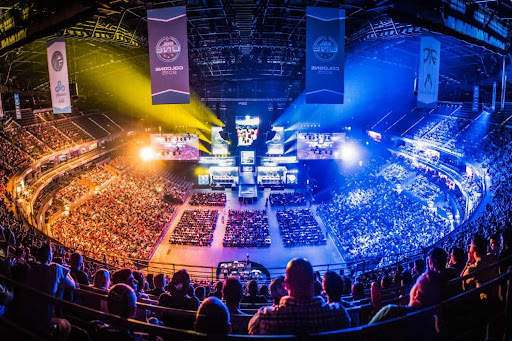

Esportes

Jogo importante para o flamengo
Em uma partida eletrizante, o Flamengo brilhou em campo, demonstrando domínio tático e habilidade técnica. Com jogadas envolventes e gols decisivos, o time rubro-negro consolidou sua performance magistral, deixando a torcida extasiada e garantindo mais uma vitória para a sua gloriosa trajetória.
Noite Marcante para Luka Doncic
Luka Doncic surpreende ao marcar 71 pontos em uma única partida na NBA, exibindo sua genialidade no basquete. Com habilidades excepcionais, ele supera desafios defensivos, consolidando sua posição como uma estrela brilhante e deixando sua marca na história da liga
Wizards e sua temporada ruim
O Washington Wizards enfrenta uma temporada desafiadora no basquete, com resultados abaixo das expectativas. Apesar do talento individual, o time tem lutado para encontrar consistência em seu desempenho, levantando questões sobre a estratégia de jogo e a gestão da equipe técnica.
E-sports

E-Sports no brasil e no mundo
Os Esports estão em franca expansão no Brasil e no mundo, destacando-se como uma indústria influente e popular. No cenário brasileiro, competições e equipes profissionais ganham destaque, impulsionadas por investimentos e patrocínios. Globalmente, os Esports ultrapassam fronteiras, atraindo grandes audiências e sendo reconhecidos oficialmente como eventos esportivos.

E-Sports mundo
Os e-sports continuam a ganhar destaque em todo o mundo, com um aumento significativo na audiência e nos investimentos. Os torneios profissionais atraem milhões de espectadores online e offline, consolidando os jogos eletrônicos como uma forma de entretenimento mainstream.
Loud
A equipe de e-sports LOUD solidifica sua posição como uma das principais forças do cenário competitivo global, conquistando títulos e admiradores ao redor do mundo. Com performances consistentes e estratégias inovadoras, a LOUD continua a atrair atenção e a elevar o padrão de excelência nos jogos eletrônicos.
Economia

Inflação no brasil
A economia brasileira enfrenta desafios com o aumento da inflação, resultado de pressões como custos de produção elevados e desequilíbrios fiscais. Essa situação impacta diversos setores e preocupa a população, exigindo medidas eficazes para estabilizar os índices inflacionários
Dolar em queda
Após a divulgação de medidas econômicas, o dólar apresentou uma queda acentuada, atingindo seu menor valor em meses. Analistas apontam para a expectativa de estabilidade política e perspectivas favoráveis para o crescimento econômico
Tecnologia

Tecnologia no mundo todo
A expansão tecnológica global, impulsionada por avanços como redes 5G e inteligência artificial, transforma rapidamente a sociedade. Embora inovações como a Internet das Coisas melhorem setores como saúde e educação, desafios como questões de privacidade e desigualdades sociais também emergem. O equilíbrio entre inovação e ética torna-se essencial para garantir benefícios positivos da tecnologia para a sociedade.

Tecnologia no mundo todo
Empresas estão adotando rapidamente tecnologias avançadas, como inteligência artificial e automação, para otimizar processos, aumentar a eficiência e impulsionar a inovação. A transformação digital está redefinindo modelos de negócios e permitindo uma adaptação mais ágil às demandas do mercado globalizado.
Inteligência Artificial
Com avanços significativos em algoritmos e capacidade computacional, a inteligência artificial está cada vez mais presente em aplicações práticas, desde assistentes virtuais até diagnósticos médicos e carros autônomos. Essa evolução promete impactar positivamente a eficiência, a produtividade e a qualidade de vida em todo o mundo.